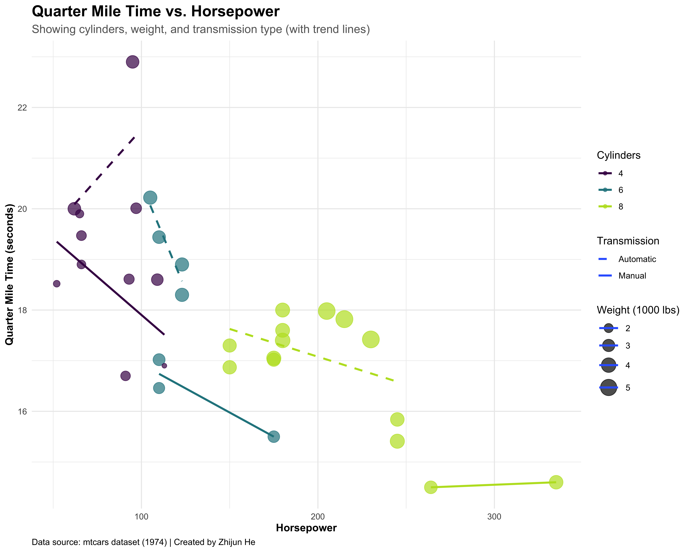
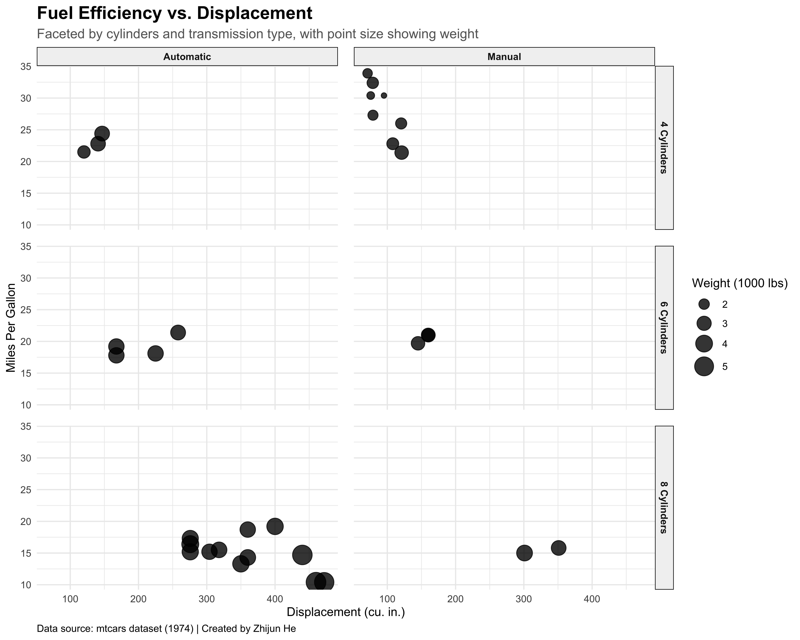

Data visualization typically begins with simple univariate plots showing distributions, then progresses to bivariate plots examining relationships between pairs of variables. Many analysts stop here, yet our world rarely operates in just two dimensions. The art of visualizing relationships among multiple variables—particularly four variables simultaneously—opens doors to deeper insights that might otherwise remain hidden in the complexity of your data.
This document demonstrates approaches to creating quadvariate visualizations that effectively communicate patterns across four variables. While challenging to execute well, these visualizations can tell rich, nuanced stories about your data that simpler plots cannot capture.
6 Dataset Selection and Preparation
For this demonstration, I’ll use the mtcars dataset, which contains fuel consumption and performance metrics for various car models from the 1970s. This dataset offers several continuous and categorical variables that we can combine in our exploration.
Code
# Load and examine the datasetdata(mtcars)# Add the row names as a column for car modelscars_data <- mtcars %>%rownames_to_column("car_model") %>%# Convert appropriate variables to factorsmutate(cyl =as.factor(cyl),vs =as.factor(vs),am =as.factor(am),gear =as.factor(gear),carb =as.factor(carb) )# Examine the structureglimpse(cars_data)
The dataset includes continuous variables such as mpg (miles per gallon), disp (displacement), hp (horsepower), and wt (weight), as well as categorical variables like cyl (number of cylinders), vs (engine shape), and am (transmission type).
7 Approaches to Quadvariate Visualization
7.1 Approach 1: Position + Color + Size + Shape
The most direct approach to quadvariate visualization combines four fundamental visual elements: - Position (x and y coordinates) - Color - Size - Shape
Code
# Basic quadvariate plot using position, color, size, and shapeggplot(cars_data, aes(x = wt, y = mpg, color =as.factor(cyl), size = hp, shape = am)) +geom_point(alpha =0.7) +scale_color_viridis_d(option ="D", end =0.9) +scale_size_continuous(range =c(2, 10)) +labs(title ="Fuel Efficiency vs. Weight of Cars",subtitle ="Showing cylinders, horsepower, and transmission type",x ="Weight (1000 lbs)",y ="Miles Per Gallon",color ="Cylinders",size ="Horsepower",shape ="Transmission" ) +theme_minimal() +theme(plot.title =element_text(face ="bold", size =16),plot.subtitle =element_text(size =12, color ="gray40"),axis.title =element_text(face ="bold"),legend.position ="right" )
This visualization reveals several patterns simultaneously:
A strong negative relationship exists between car weight and fuel efficiency.
Cars with fewer cylinders (shown in blue) generally achieve better fuel economy.
Higher horsepower (larger points) typically corresponds with lower mpg.
Manual transmission cars (triangles) tend to have better fuel efficiency than automatic transmission cars (circles) of similar weight.
The effectiveness of this approach lies in its ability to show interactions between variables. For instance, we can see that weight and cylinder count are correlated, but even controlling for weight, cars with fewer cylinders tend to be more fuel-efficient.
7.2 Approach 2: Position + Color + Size + Faceting
When shape becomes difficult to distinguish—particularly with crowded plots—faceting provides an excellent alternative. This approach creates separate panels for one categorical variable while still encoding three other variables.
Code
# Quadvariate visualization using faceting instead of shapeggplot(cars_data, aes(x = wt, y = mpg, color =as.factor(cyl), size = hp)) +geom_point(alpha =0.8) +facet_wrap(~ am, labeller =labeller(am =c("0"="Automatic", "1"="Manual"))) +scale_color_viridis_d(option ="D", end =0.9) +scale_size_continuous(range =c(2, 8)) +labs(title ="Fuel Efficiency vs. Weight by Transmission Type",subtitle ="Showing cylinders and horsepower",x ="Weight (1000 lbs)",y ="Miles Per Gallon",color ="Cylinders",size ="Horsepower" ) +theme_minimal() +theme(plot.title =element_text(face ="bold", size =16),plot.subtitle =element_text(size =12, color ="gray40"),strip.background =element_rect(fill ="gray95"),strip.text =element_text(face ="bold"),legend.position ="right" )
Faceting by transmission type provides a clearer view of how the relationships between weight, mpg, cylinders, and horsepower vary across transmission types. This arrangement makes it easier to compare patterns between the two groups. We can observe that manual transmission cars maintain better fuel efficiency across weight classes, particularly for higher-cylinder counts.
7.3 Approach 3: Position + Color + Size + Annotation
Another powerful approach involves using position, color, and size for three variables, while incorporating annotations to represent a fourth variable.
Code
# Create a dataset with labels for selected pointslabeled_cars <- cars_data %>%mutate(label_text =if_else( disp >350| mpg >30| (hp >200& wt <3), paste0(car_model, "\n", gear, " gears"),NA_character_ ))# Create the plot with annotationsggplot(cars_data, aes(x = disp, y = mpg, color =as.factor(cyl), size = wt)) +geom_point(alpha =0.7) +geom_text_repel(data = labeled_cars %>%filter(!is.na(label_text)),aes(label = label_text),size =3,box.padding =0.5,point.padding =0.5,force =2,segment.color ="gray40",segment.alpha =0.6 ) +scale_color_viridis_d(option ="D", end =0.9) +scale_size_continuous(range =c(2, 8)) +labs(title ="Fuel Efficiency vs. Engine Displacement",subtitle ="Showing cylinders, weight, and gear count for notable cars",x ="Displacement (cu. in.)",y ="Miles Per Gallon",color ="Cylinders",size ="Weight (1000 lbs)" ) +theme_minimal() +theme(plot.title =element_text(face ="bold", size =16),plot.subtitle =element_text(size =12, color ="gray40"),axis.title =element_text(face ="bold"),legend.position ="right" )
By selectively annotating points of interest with the number of gears, we’ve added a fourth dimension to our visualization. This technique works particularly well when you want to highlight specific observations or when the fourth variable is most relevant for certain data points. The annotations reveal that many high-performance cars (high displacement, lower mpg) have higher gear counts, while the most fuel-efficient vehicles typically have moderate gear counts.
7.4 Approach 4: Multiple Aesthetics with Trend Lines
Adding statistical elements like trend lines can further enhance a quadvariate visualization by emphasizing patterns within subgroups.
Code
# Create a plot with trend lines for different groupsggplot(cars_data, aes(x = hp, y = qsec, color =as.factor(cyl), size = wt)) +geom_point(alpha =0.7) +geom_smooth(method ="lm", se =FALSE, aes(linetype = am), linewidth =1) +scale_color_viridis_d(option ="D", end =0.9) +scale_size_continuous(range =c(2, 8)) +scale_linetype_manual(values =c("0"="dashed", "1"="solid"),labels =c("0"="Automatic", "1"="Manual") ) +labs(title ="Quarter Mile Time vs. Horsepower",subtitle ="Showing cylinders, weight, and transmission type (with trend lines)",x ="Horsepower",y ="Quarter Mile Time (seconds)",color ="Cylinders",size ="Weight (1000 lbs)",linetype ="Transmission" ) +theme_minimal() +theme(plot.title =element_text(face ="bold", size =16),plot.subtitle =element_text(size =12, color ="gray40"),axis.title =element_text(face ="bold"),legend.position ="right" )

This visualization demonstrates the relationship between horsepower and quarter-mile time (qsec), with cylinder count shown through color, weight through point size, and transmission type through line style. The trend lines reveal how the relationship between horsepower and quarter-mile time varies by transmission type, showing that manual transmission cars generally have faster quarter-mile times at similar horsepower levels.
7.5 Approach 5: Interactive Visualization
Static visualizations have limitations, particularly for complex quadvariate relationships. Interactive visualizations allow users to explore the data dynamically.
Code
# Create an interactive plot using plotlyinteractive_plot <-ggplot(cars_data, aes(x = wt, y = mpg, color =as.factor(cyl), size = hp,text =paste("Car:", car_model,"<br>MPG:", mpg,"<br>Weight:", wt,"<br>Cylinders:", cyl,"<br>Horsepower:", hp,"<br>Transmission:", ifelse(am ==1, "Manual", "Automatic") ))) +geom_point(alpha =0.8) +scale_color_viridis_d(option ="D", end =0.9) +scale_size_continuous(range =c(3, 10)) +labs(title ="Fuel Efficiency vs. Weight of Cars",subtitle ="Hover over points for details",x ="Weight (1000 lbs)",y ="Miles Per Gallon",color ="Cylinders",size ="Horsepower" ) +theme_minimal()# Convert to an interactive plotly objectplotly::ggplotly(interactive_plot, tooltip ="text")
Interactive visualization allows the viewer to hover over points to see exact values and additional information, revealing details about the fourth (or even fifth or sixth) variables without cluttering the visual space. This approach is particularly valuable for presentations or dashboards where audience members can explore the data according to their interests.
7.6 Approach 6: Small Multiples with Embedded Elements
Small multiples (or trellis plots) provide another powerful approach to quadvariate visualization. By creating a grid of plots, we can systematically vary two categorical variables while showing relationships between two continuous variables.
Code
# Create a plot with small multiplesggplot(cars_data, aes(x = disp, y = mpg)) +geom_point(aes(size = wt), alpha =0.8) +facet_grid(cyl ~ am, labeller =labeller(am =c("0"="Automatic", "1"="Manual"),cyl =c("4"="4 Cylinders", "6"="6 Cylinders", "8"="8 Cylinders") )) +scale_size_continuous(range =c(2, 8)) +labs(title ="Fuel Efficiency vs. Displacement",subtitle ="Faceted by cylinders and transmission type, with point size showing weight",x ="Displacement (cu. in.)",y ="Miles Per Gallon",size ="Weight (1000 lbs)" ) +theme_minimal() +theme(plot.title =element_text(face ="bold", size =16),plot.subtitle =element_text(size =12, color ="gray40"),strip.background =element_rect(fill ="gray95"),strip.text =element_text(face ="bold"),panel.spacing =unit(1, "lines") )

This approach creates a grid where each cell represents a specific combination of cylinder count and transmission type. Within each cell, the relationship between displacement and mpg is shown, with point size indicating weight. The small multiples approach is particularly effective at revealing how relationships vary across categorical variables, making it easy to compare patterns across different subgroups of data.
8 Design Principles for Effective Quadvariate Visualization
Creating effective quadvariate visualizations requires careful consideration of several design principles:
8.1 1. Visual Hierarchy
Not all variables deserve equal emphasis in your visualization. Establish a clear visual hierarchy by:
Placing the most important relationship on the x and y axes
Using color for the next most important variable, particularly if it’s categorical
Using less prominent visual cues (size, shape, etc.) for secondary variables
8.2 2. Perceptual Effectiveness
Different visual encodings vary in their perceptual effectiveness:
Position (x, y coordinates) is most precisely perceived
Color is effective for categorical variables but less so for continuous ones
Size works for continuous variables but has a more limited perceptual range
Shape works well for categorical variables with few categories
Choose encodings that match the precision requirements of each variable and the nature of the data.
8.3 3. Cognitive Load Management
Quadvariate visualizations can easily become overwhelming. Manage cognitive load by:
Using clear, direct labeling
Providing context through titles and annotations
Considering interactive elements to reveal details on demand
Breaking complex relationships into multiple coordinated views
8.4 4. Accessibility Considerations
Ensure your visualizations remain accessible:
Use colorblind-friendly palettes (like viridis)
Incorporate redundant encodings when possible
Provide text alternatives or descriptions
Test visualization with potential users
9 Future Enhancements
As you continue to develop your quadvariate visualization skills, consider these potential enhancements:
Animation: Incorporate time as a fifth dimension by animating your visualization
Custom glyphs: Design specialized symbols that encode multiple variables in their form
Coordinated multiple views: Create linked visualizations that highlight the same data points across different perspectives
Dimension reduction techniques: Use methods like PCA to reduce dimensionality while preserving important relationships
10 Conclusion
Quadvariate visualization represents a powerful approach to understanding complex relationships in your data. While challenging to execute effectively, these visualizations can reveal patterns and interactions that simpler plots would miss. The approaches demonstrated in this document—combining position, color, size, shape, faceting, and annotation—provide a foundation for creating rich, informative graphics.
Remember that the goal of any visualization is to communicate clearly. Even with the technical ability to show four variables, always ask whether the added complexity serves your narrative. Sometimes, multiple simpler visualizations may communicate more effectively than a single complex one.
As you refine your visualization skills, experiment with these techniques, paying careful attention to user feedback and the clarity of your message. The most successful visualizations balance technical sophistication with intuitive comprehension.
11 References
Wickham H (2016). ggplot2: Elegant Graphics for Data Analysis. Springer-Verlag New York. ISBN 978-3-319-24277-4, https://ggplot2.tidyverse.org.
Wilke CO (2019). Fundamentals of Data Visualization: A Primer on Making Informative and Compelling Figures. O’Reilly Media. https://clauswilke.com/dataviz/
Few S (2009). Now You See It: Simple Visualization Techniques for Quantitative Analysis. Analytics Press.
Munzner T (2014). Visualization Analysis and Design. CRC Press.
Source Code
---title: "Quadvariate Visualization"author: "Zhijun He"date: todayformat: html: code-fold: true theme: flatly toc: true number-sections: true fig-width: 10 fig-height: 7---```{r setup, include=FALSE}knitr::opts_chunk$set(echo = TRUE, message = FALSE, warning = FALSE)library(tidyverse)library(ggrepel)library(patchwork)library(viridis)library(plotly)```# Introduction to Quadvariate VisualizationData visualization typically begins with simple univariate plots showing distributions, then progresses to bivariate plots examining relationships between pairs of variables. Many analysts stop here, yet our world rarely operates in just two dimensions. The art of visualizing relationships among multiple variables—particularly four variables simultaneously—opens doors to deeper insights that might otherwise remain hidden in the complexity of your data.This document demonstrates approaches to creating quadvariate visualizations that effectively communicate patterns across four variables. While challenging to execute well, these visualizations can tell rich, nuanced stories about your data that simpler plots cannot capture.# Dataset Selection and PreparationFor this demonstration, I'll use the mtcars dataset, which contains fuel consumption and performance metrics for various car models from the 1970s. This dataset offers several continuous and categorical variables that we can combine in our exploration.```{r}# Load and examine the datasetdata(mtcars)# Add the row names as a column for car modelscars_data <- mtcars %>%rownames_to_column("car_model") %>%# Convert appropriate variables to factorsmutate(cyl =as.factor(cyl),vs =as.factor(vs),am =as.factor(am),gear =as.factor(gear),carb =as.factor(carb) )# Examine the structureglimpse(cars_data)```The dataset includes continuous variables such as mpg (miles per gallon), disp (displacement), hp (horsepower), and wt (weight), as well as categorical variables like cyl (number of cylinders), vs (engine shape), and am (transmission type).# Approaches to Quadvariate Visualization## Approach 1: Position + Color + Size + ShapeThe most direct approach to quadvariate visualization combines four fundamental visual elements:- Position (x and y coordinates)- Color- Size- Shape```{r approach1}# Basic quadvariate plot using position, color, size, and shapeggplot(cars_data, aes(x = wt, y = mpg, color = as.factor(cyl), size = hp, shape = am)) + geom_point(alpha = 0.7) + scale_color_viridis_d(option = "D", end = 0.9) + scale_size_continuous(range = c(2, 10)) + labs( title = "Fuel Efficiency vs. Weight of Cars", subtitle = "Showing cylinders, horsepower, and transmission type", x = "Weight (1000 lbs)", y = "Miles Per Gallon", color = "Cylinders", size = "Horsepower", shape = "Transmission" ) + theme_minimal() + theme( plot.title = element_text(face = "bold", size = 16), plot.subtitle = element_text(size = 12, color = "gray40"), axis.title = element_text(face = "bold"), legend.position = "right" )```This visualization reveals several patterns simultaneously:1. A strong negative relationship exists between car weight and fuel efficiency.2. Cars with fewer cylinders (shown in blue) generally achieve better fuel economy.3. Higher horsepower (larger points) typically corresponds with lower mpg.4. Manual transmission cars (triangles) tend to have better fuel efficiency than automatic transmission cars (circles) of similar weight.The effectiveness of this approach lies in its ability to show interactions between variables. For instance, we can see that weight and cylinder count are correlated, but even controlling for weight, cars with fewer cylinders tend to be more fuel-efficient.## Approach 2: Position + Color + Size + FacetingWhen shape becomes difficult to distinguish—particularly with crowded plots—faceting provides an excellent alternative. This approach creates separate panels for one categorical variable while still encoding three other variables.```{r approach2}# Quadvariate visualization using faceting instead of shapeggplot(cars_data, aes(x = wt, y = mpg, color = as.factor(cyl), size = hp)) + geom_point(alpha = 0.8) + facet_wrap(~ am, labeller = labeller(am = c("0" = "Automatic", "1" = "Manual"))) + scale_color_viridis_d(option = "D", end = 0.9) + scale_size_continuous(range = c(2, 8)) + labs( title = "Fuel Efficiency vs. Weight by Transmission Type", subtitle = "Showing cylinders and horsepower", x = "Weight (1000 lbs)", y = "Miles Per Gallon", color = "Cylinders", size = "Horsepower" ) + theme_minimal() + theme( plot.title = element_text(face = "bold", size = 16), plot.subtitle = element_text(size = 12, color = "gray40"), strip.background = element_rect(fill = "gray95"), strip.text = element_text(face = "bold"), legend.position = "right" )```Faceting by transmission type provides a clearer view of how the relationships between weight, mpg, cylinders, and horsepower vary across transmission types. This arrangement makes it easier to compare patterns between the two groups. We can observe that manual transmission cars maintain better fuel efficiency across weight classes, particularly for higher-cylinder counts.## Approach 3: Position + Color + Size + AnnotationAnother powerful approach involves using position, color, and size for three variables, while incorporating annotations to represent a fourth variable.```{r approach3}# Create a dataset with labels for selected pointslabeled_cars <- cars_data %>% mutate(label_text = if_else( disp > 350 | mpg > 30 | (hp > 200 & wt < 3), paste0(car_model, "\n", gear, " gears"), NA_character_ ))# Create the plot with annotationsggplot(cars_data, aes(x = disp, y = mpg, color = as.factor(cyl), size = wt)) + geom_point(alpha = 0.7) + geom_text_repel( data = labeled_cars %>% filter(!is.na(label_text)), aes(label = label_text), size = 3, box.padding = 0.5, point.padding = 0.5, force = 2, segment.color = "gray40", segment.alpha = 0.6 ) + scale_color_viridis_d(option = "D", end = 0.9) + scale_size_continuous(range = c(2, 8)) + labs( title = "Fuel Efficiency vs. Engine Displacement", subtitle = "Showing cylinders, weight, and gear count for notable cars", x = "Displacement (cu. in.)", y = "Miles Per Gallon", color = "Cylinders", size = "Weight (1000 lbs)" ) + theme_minimal() + theme( plot.title = element_text(face = "bold", size = 16), plot.subtitle = element_text(size = 12, color = "gray40"), axis.title = element_text(face = "bold"), legend.position = "right" )```By selectively annotating points of interest with the number of gears, we've added a fourth dimension to our visualization. This technique works particularly well when you want to highlight specific observations or when the fourth variable is most relevant for certain data points. The annotations reveal that many high-performance cars (high displacement, lower mpg) have higher gear counts, while the most fuel-efficient vehicles typically have moderate gear counts.## Approach 4: Multiple Aesthetics with Trend LinesAdding statistical elements like trend lines can further enhance a quadvariate visualization by emphasizing patterns within subgroups.```{r approach4}# Create a plot with trend lines for different groupsggplot(cars_data, aes(x = hp, y = qsec, color = as.factor(cyl), size = wt)) + geom_point(alpha = 0.7) + geom_smooth(method = "lm", se = FALSE, aes(linetype = am), linewidth = 1) + scale_color_viridis_d(option = "D", end = 0.9) + scale_size_continuous(range = c(2, 8)) + scale_linetype_manual( values = c("0" = "dashed", "1" = "solid"), labels = c("0" = "Automatic", "1" = "Manual") ) + labs( title = "Quarter Mile Time vs. Horsepower", subtitle = "Showing cylinders, weight, and transmission type (with trend lines)", x = "Horsepower", y = "Quarter Mile Time (seconds)", color = "Cylinders", size = "Weight (1000 lbs)", linetype = "Transmission" ) + theme_minimal() + theme( plot.title = element_text(face = "bold", size = 16), plot.subtitle = element_text(size = 12, color = "gray40"), axis.title = element_text(face = "bold"), legend.position = "right" )```This visualization demonstrates the relationship between horsepower and quarter-mile time (qsec), with cylinder count shown through color, weight through point size, and transmission type through line style. The trend lines reveal how the relationship between horsepower and quarter-mile time varies by transmission type, showing that manual transmission cars generally have faster quarter-mile times at similar horsepower levels.## Approach 5: Interactive VisualizationStatic visualizations have limitations, particularly for complex quadvariate relationships. Interactive visualizations allow users to explore the data dynamically.```{r approach5}# Create an interactive plot using plotlyinteractive_plot <- ggplot(cars_data, aes(x = wt, y = mpg, color = as.factor(cyl), size = hp, text = paste( "Car:", car_model, "<br>MPG:", mpg, "<br>Weight:", wt, "<br>Cylinders:", cyl, "<br>Horsepower:", hp, "<br>Transmission:", ifelse(am == 1, "Manual", "Automatic") ))) + geom_point(alpha = 0.8) + scale_color_viridis_d(option = "D", end = 0.9) + scale_size_continuous(range = c(3, 10)) + labs( title = "Fuel Efficiency vs. Weight of Cars", subtitle = "Hover over points for details", x = "Weight (1000 lbs)", y = "Miles Per Gallon", color = "Cylinders", size = "Horsepower" ) + theme_minimal()# Convert to an interactive plotly objectplotly::ggplotly(interactive_plot, tooltip = "text")```Interactive visualization allows the viewer to hover over points to see exact values and additional information, revealing details about the fourth (or even fifth or sixth) variables without cluttering the visual space. This approach is particularly valuable for presentations or dashboards where audience members can explore the data according to their interests.## Approach 6: Small Multiples with Embedded ElementsSmall multiples (or trellis plots) provide another powerful approach to quadvariate visualization. By creating a grid of plots, we can systematically vary two categorical variables while showing relationships between two continuous variables.```{r approach6}# Create a plot with small multiplesggplot(cars_data, aes(x = disp, y = mpg)) + geom_point(aes(size = wt), alpha = 0.8) + facet_grid(cyl ~ am, labeller = labeller( am = c("0" = "Automatic", "1" = "Manual"), cyl = c("4" = "4 Cylinders", "6" = "6 Cylinders", "8" = "8 Cylinders") )) + scale_size_continuous(range = c(2, 8)) + labs( title = "Fuel Efficiency vs. Displacement", subtitle = "Faceted by cylinders and transmission type, with point size showing weight", x = "Displacement (cu. in.)", y = "Miles Per Gallon", size = "Weight (1000 lbs)" ) + theme_minimal() + theme( plot.title = element_text(face = "bold", size = 16), plot.subtitle = element_text(size = 12, color = "gray40"), strip.background = element_rect(fill = "gray95"), strip.text = element_text(face = "bold"), panel.spacing = unit(1, "lines") )```This approach creates a grid where each cell represents a specific combination of cylinder count and transmission type. Within each cell, the relationship between displacement and mpg is shown, with point size indicating weight. The small multiples approach is particularly effective at revealing how relationships vary across categorical variables, making it easy to compare patterns across different subgroups of data.# Design Principles for Effective Quadvariate VisualizationCreating effective quadvariate visualizations requires careful consideration of several design principles:## 1. Visual HierarchyNot all variables deserve equal emphasis in your visualization. Establish a clear visual hierarchy by:- Placing the most important relationship on the x and y axes- Using color for the next most important variable, particularly if it's categorical- Using less prominent visual cues (size, shape, etc.) for secondary variables## 2. Perceptual EffectivenessDifferent visual encodings vary in their perceptual effectiveness:- Position (x, y coordinates) is most precisely perceived- Color is effective for categorical variables but less so for continuous ones- Size works for continuous variables but has a more limited perceptual range- Shape works well for categorical variables with few categoriesChoose encodings that match the precision requirements of each variable and the nature of the data.## 3. Cognitive Load ManagementQuadvariate visualizations can easily become overwhelming. Manage cognitive load by:- Using clear, direct labeling- Providing context through titles and annotations- Considering interactive elements to reveal details on demand- Breaking complex relationships into multiple coordinated views## 4. Accessibility ConsiderationsEnsure your visualizations remain accessible:- Use colorblind-friendly palettes (like viridis)- Incorporate redundant encodings when possible- Provide text alternatives or descriptions- Test visualization with potential users# Future EnhancementsAs you continue to develop your quadvariate visualization skills, consider these potential enhancements:1. **Animation**: Incorporate time as a fifth dimension by animating your visualization2. **Custom glyphs**: Design specialized symbols that encode multiple variables in their form3. **Coordinated multiple views**: Create linked visualizations that highlight the same data points across different perspectives4. **Dimension reduction techniques**: Use methods like PCA to reduce dimensionality while preserving important relationships# ConclusionQuadvariate visualization represents a powerful approach to understanding complex relationships in your data. While challenging to execute effectively, these visualizations can reveal patterns and interactions that simpler plots would miss. The approaches demonstrated in this document—combining position, color, size, shape, faceting, and annotation—provide a foundation for creating rich, informative graphics.Remember that the goal of any visualization is to communicate clearly. Even with the technical ability to show four variables, always ask whether the added complexity serves your narrative. Sometimes, multiple simpler visualizations may communicate more effectively than a single complex one.As you refine your visualization skills, experiment with these techniques, paying careful attention to user feedback and the clarity of your message. The most successful visualizations balance technical sophistication with intuitive comprehension.# ReferencesWickham H (2016). *ggplot2: Elegant Graphics for Data Analysis*. Springer-Verlag New York. ISBN 978-3-319-24277-4, https://ggplot2.tidyverse.org.Wilke CO (2019). *Fundamentals of Data Visualization: A Primer on Making Informative and Compelling Figures*. O'Reilly Media. https://clauswilke.com/dataviz/Few S (2009). *Now You See It: Simple Visualization Techniques for Quantitative Analysis*. Analytics Press.Munzner T (2014). *Visualization Analysis and Design*. CRC Press.